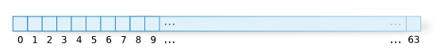
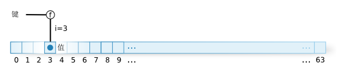
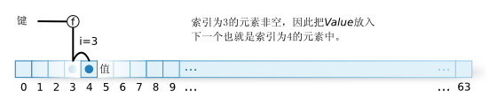
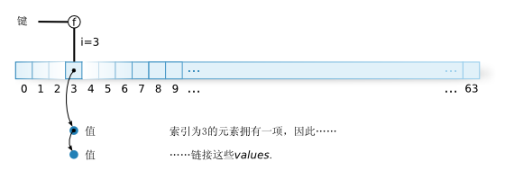
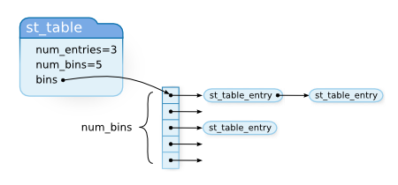

st_table作为方法表和实例表，st_table在前面提到过。在本章中，让我们详细看一下st_table的机制。
我之前提到过，st_table是一个hash表。什么是hash表呢？它是一种数据结构，记录一对一的关系，比如变量名与其值，函数名与其体，等等。
然而，除hash表外，当然还有其它的数据结构，可以记录一对一的关系。比如下面的list数据结构也能满足这个目的。
struct entry {
ID key;
VALUE val;
struct entry *next; /* 指向下一项 */
};
然而，这种方法缓慢。如果list中包含上千项，在最差的情况下，必需穿越上千次的链。 换句话说，搜索时间随元素数量的比例而增长。这很糟糕。从远古时代开始， 就酝酿出许多不同的提速方法。hash表就是提速方法之一。换句话说，这里的要点不在于是否需要hash表，而是因为它可以更快一些。
那么接下来，我们来看看st_table。但首先说一下，这个库并非Matsumoto所创，而是：
st.c credits
1 /* This is a public domain general purpose hash table package
written by Peter Moore @ UCB. */
(st.c)
如上所示。
顺便说一下，当我用Google搜索时，找到了另一个版本，它提到st_table是“STring TABLE”的缩写。 然而，我发现一个矛盾，它有“通用目的”和“字符串”两个方面。
可以这样理解hash表：让我们把它看作一个拥有n项的数组。比如，假设n=64（图1）。

图1: 数组
然后，我们指定一个函数f，用一个键值产生一个0到n-1（0-63）的整数i。我们称这个f为hash函数。 对于给定的相同键值，f总会产生i。比如，如果我们做个假设，把键值限定为正整数，那么如果键值被64整除， 那么，余数总是在0到63之间。这个计算方法就可以作为函数f。
记录关系时，给定一个键值，函数f产生i，把它放到我们预备好的数组中索引为i的位置上。 换句话说，通过索引访问数组非常快。因此，基本的想法就是把键值变成整数。

图2: 数组赋值
然而，在现实世界中，问题没那么简单。这个想法有一个关键的问题。因为n只是64，如果要记录多于64个的关系， 肯定会有两个不同的键值有相同的索引。即便少于64，也可能会有相同的发生。以前面hash函数“key % 64”为例， 键值65和129的hash值都是1。这称为hash值冲突。有许多办法用来解决冲突。
比如，如果发生冲突，把它插入下一个元素的位置。这种方法叫做开放寻址。（图3）

图3: 开放寻址
除了像这样使用数组，还有其它的方式，比如使用指针，数组的每个元素都是一个指向各自链表的指针。
那么当发生冲突时，链表随之生长。这称为链接（chaining）。（图4）st_table使用的就是这种链接的方法。

图4: 链接
然而，如果确定用到是哪些键值，那么可以想象有一个绝不会产生冲突的hash函数。这种函数称为“完美hash函数”。
实际上，确实有一些工具能够对一套给定的任意字符串创建了一个完美hash函数。GNU gpref就是其中之一。
ruby的解析器实现就使用了GNU gperf，但是……这还不到我们讨论它的时候。我们会在本书的第二部分讨论它。
让我们从看源码起步。正如在引介的章节中所写，如果既有数据又有代码，最好先看数据。下面就是st_table的数据类型。
st_table
9 typedef struct st_table st_table;
16 struct st_table {
17 struct st_hash_type *type;
18 int num_bins; /* slot count */
19 int num_entries; /* total number of entries */
20 struct st_table_entry **bins; /* slot */
21 };
(st.h)
▼ struct st_table_entry
16 struct st_table_entry {
17 unsigned int hash;
18 char *key;
19 char *record;
20 st_table_entry *next;
21 };
(st.c)
st_table主要是一个表的数据结构。st_table_entry持有存储的一个值。st_table_entry包含一个称为next的成员，
用于将st_table_entry放入一个链表。这是链接方法链的部分。这里用到了st_hash_type数据类型，稍后解释。
先让我解释其它部分，这样，你就能够对比和理解其角色了。

图5: st_table数据结构
那么让我们来看看st_hash_type。
struct st_hash_type
11 struct st_hash_type {
12 int (*compare)(); /* comparison function */
13 int (*hash)(); /* hash function */
14 };
(st.h)
这还是第三章，那么我们换种方式来看它。
int (*compare)()
这个部分表示compare成员的数据类型是一个函数指针，其返回值为int。hash也具有同样的类型。
这个变量可以用下面的方式替代：
int
great_function(int n)
{
/* ToDo: 做一些伟大的事情! */
return n;
}
{
int (*f)();
f = great_function;
这样调用：
(*f)(7);
}
我们回到st_hash_type。hash和compare两个成员之中，hash就是前面提到的hash函数f。
另一方面，compare这个函数的作用是评估值是否相同。在链接方法中，相同hash值的点里可能插入了多个元素。
为了准确知道查找的是哪个元素，必需使用一个我们绝对信任的比较函数。compare就是那个函数。
这个st_hash_type是一项很好的泛化的技术。hash表本身并不确定存储键值的数据类型是什么。
比如，在ruby中，st_table的键值是ID或char*或VALUE，但是对每个（数据类型）都使用同样的hash是愚蠢的。
通常，随键值数据类型不同而改变的就是hasn函数之类的东西。对于内存管理和冲突检测之类的东西，通常大部分代码都一样。
只有实现需要随数据类型不同而改变的部分绑定到一个函数中，使用一个函数指针指向那个函数。
这样的话，组成hash表实现的主体代码就可以使用它了。
在面向对象的语言中，你可以把过程附着在一个对象上，传递它，因此，不需要这种机制。 也许说这种机制作为一种语言特征内建其中更合适。
st_hash_type的例子使用一个类似于st_hash_type的数据结构是一种很好的抽象，但另一方面，理解它实际传递是何种代码可能就有些困难了。
如果不检查hash或compare用的是什么函数，我们便无法掌握事实。为了理解这点，可能要看一下st_init_numtable()才行，
在前面一章中，我们介绍过它。这个函数创建了一个表，其键值的数据类型为整数。
st_init_numtable()
182 st_table*
183 st_init_numtable()
184 {
185 return st_init_table(&type_numhash);
186 }
(st.c)
st_init_table()是这样一个函数，它完成表内存分配等工作。type_numhash是一个st_hash_type
（它是一个名为st_table“类型”的成员）。看看这个type_numhash：
type_numhash
37 static struct st_hash_type type_numhash = {
38 numcmp,
39 numhash,
40 };
552 static int
553 numcmp(x, y)
554 long x, y;
555 {
556 return x != y;
557 }
559 static int
560 numhash(n)
561 long n;
562 {
563 return n;
564 }
(st.c)
非常简单。ruby使用的这个表基本上就是这个type_numhash。
st_lookup()接下来，我们看一下使用这个数据结构的函数。首先，从搜索的函数看起是个好主意。
下面就是搜索hash表的函数st_lookup()。
st_lookup()
247 int
248 st_lookup(table, key, value)
249 st_table *table;
250 register char *key;
251 char **value;
252 {
253 unsigned int hash_val, bin_pos;
254 register st_table_entry *ptr;
255
256 hash_val = do_hash(key, table);
257 FIND_ENTRY(table, ptr, hash_val, bin_pos);
258
259 if (ptr == 0) {
260 return 0;
261 }
262 else {
263 if (value != 0) *value = ptr->record;
264 return 1;
265 }
266 }
(st.c)
重要的部分几乎都在do_hash()和FIND_ENTRY()中。让我们按顺序看一下。
do_hash()
68 #define do_hash(key,table) (unsigned int)(*(table)->type->hash)((key)) (st.c)
慎重起见，我们记下这个难于理解的宏的主体：
(table)->type->hash
是一个函数指针，key作为参数传递给它。这是调用函数的语法。*不是用在表上。换句话说，这个宏是一个hash值产生器，
每个数据类型都有事先预备好的hash函数type->hash，用它对键值产生一个hash值。
下面，继续来看FIND_ENTRY()。
FIND_ENTRY()
235 #define FIND_ENTRY(table, ptr, hash_val, bin_pos) do {\
236 bin_pos = hash_val%(table)->num_bins;\
237 ptr = (table)->bins[bin_pos];\
238 if (PTR_NOT_EQUAL(table, ptr, hash_val, key)) {\
239 COLLISION;\
240 while (PTR_NOT_EQUAL(table, ptr->next, hash_val, key)) {\
241 ptr = ptr->next;\
242 }\
243 ptr = ptr->next;\
244 }\
245 } while (0)
227 #define PTR_NOT_EQUAL(table, ptr, hash_val, key) ((ptr) != 0 && \
(ptr->hash != (hash_val) || !EQUAL((table), (key), (ptr)->key)))
66 #define EQUAL(table,x,y) \
((x)==(y) || (*table->type->compare)((x),(y)) == 0)
(st.c)
COLLISION是一个调试宏，所以，我们（应该）忽略它。
FIND_ENTRY()的参数，从左开始是：
st_table第二个参数会指向找到的st_table_entry*。
在最外层的，do .. while(0)用于对多表达式的宏进行安全封装。与其说是ruby，
不如说这是C语言预处理器的一种常用手法。在if(1)的情况下，可能需要附加else。
在while(1)的情况下，可能需要在最后添加一个break。
还有，while(0)后面没有分号。说到原因
FIND_ENTRY();
这样就不会让出现在通常表达式后的逗号成为徒劳。
st_add_direct()继续，让我们来看看st_add_direct()，它向hash表中添加一个新的关系。
这个函数并不检查键值是否已经存在。它总会添加一个新的项。这就是函数名中direct的含义所在。
st_add_direct()
308 void
309 st_add_direct(table, key, value)
310 st_table *table;
311 char *key;
312 char *value;
313 {
314 unsigned int hash_val, bin_pos;
315
316 hash_val = do_hash(key, table);
317 bin_pos = hash_val % table->num_bins;
318 ADD_DIRECT(table, key, value, hash_val, bin_pos);
319 }
(st.c)
如同前面一样，这里调用do_hash()宏获取一个值。随后，下一个计算等同于FIND_ENTRY()开始的部分，
它以hash值得到真正的索引。
插入操作看上去是以ADD_DIRECT()实现的，既然名字全部大写，我们期待它是一个宏。
ADD_DIRECT()
268 #define ADD_DIRECT(table, key, value, hash_val, bin_pos) \
269 do { \
270 st_table_entry *entry; \
271 if (table->num_entries / (table->num_bins) \
> ST_DEFAULT_MAX_DENSITY) { \
272 rehash(table); \
273 bin_pos = hash_val % table->num_bins; \
274 } \
275 \
/* (A) */ \
276 entry = alloc(st_table_entry); \
277 \
278 entry->hash = hash_val; \
279 entry->key = key; \
280 entry->record = value; \
/* (B) */ \
281 entry->next = table->bins[bin_pos]; \
282 table->bins[bin_pos] = entry; \
283 table->num_entries++; \
284 } while (0)
(st.c)
第一个if是一个异常情况，我稍后解释它。
（A） 分配以及初始化一个st_table_entry。
（B） 把entry插入到列表的起始位置。这是处理列表的常见手法。换句话说，
entry->next = list_beg; list_beg = entry;
将一个项插入到列表的前端。这类似于Lisp语言中的“cons-ing”。自己检查一下，
即便list_beg为空，这段代码也是正确的。
现在，让我来解释一下我留下的那段代码。
▼ADD_DIRECT()-rehash
271 if (table->num_entries / (table->num_bins) \
> ST_DEFAULT_MAX_DENSITY) { \
272 rehash(table); \
273 bin_pos = hash_val % table->num_bins; \
274 } \
(st.c)
DENSITY is“浓度”。换句话说，这个条件检查hash表是否“拥挤”。在st_table中，
随着使用相同bin_pos的增长，链表会变得更长。换句话说，搜索会变慢。
如果bin中的元素过多，那么就应该增加bin的数量，降低拥挤程度。
当前ST_DEFAULT_MAX_DENSITY是
ST_DEFAULT_MAX_DENSITY
23 #define ST_DEFAULT_MAX_DENSITY 5 (st.c)
因为这个设置，如果在所有的bin_pos都有5个st_table_entries，那么大小就要增加。
st_insert()st_insert()只是将st_add_direct()和st_lookup()组合了起来，因此，
如果你理解了那两个，这个就容易了。
st_insert()
286 int
287 st_insert(table, key, value)
288 register st_table *table;
289 register char *key;
290 char *value;
291 {
292 unsigned int hash_val, bin_pos;
293 register st_table_entry *ptr;
294
295 hash_val = do_hash(key, table);
296 FIND_ENTRY(table, ptr, hash_val, bin_pos);
297
298 if (ptr == 0) {
299 ADD_DIRECT(table, key, value, hash_val, bin_pos);
300 return 0;
301 }
302 else {
303 ptr->record = value;
304 return 1;
305 }
306 }
(st.c)
它会检查元素是否已经在表中存在。只有它不存在时，才会添加。如果插入，返回0，否则，返回1。
ID和符号我已经讨论过什么是ID了。它将一个字符串对应为一个值，以它声明不同的名字。
实际的数据类型是unsigned int。
char*到ID字符串到ID的转换由rb_intern()完成。这个函数相当长，让我们省略掉中间的部分。
rb_intern() (simplified)
5451 static st_table *sym_tbl; /* char* to ID */
5452 static st_table *sym_rev_tbl; /* ID to char* */
5469 ID
5470 rb_intern(name)
5471 const char *name;
5472 {
5473 const char *m = name;
5474 ID id;
5475 int last;
5476
/* If for a name, there is a corresponding ID that is already
registered, then return that ID */
5477 if (st_lookup(sym_tbl, name, &id))
5478 return id;
/* omitted ... create a new ID */
/* register the name and ID relation */
5538 id_regist:
5539 name = strdup(name);
5540 st_add_direct(sym_tbl, name, id);
5541 st_add_direct(sym_rev_tbl, id, name);
5542 return id;
5543 }
(parse.y)
字符串和ID的对应关系由st_table完成。这里可能没有什么特别难的部分。
省略的部分做了些什么呢？它对全局变量名和实例变量名进行特殊处理，给它们设上了标记。
这是因为，在解析器中，根据ID了解变量的分类是必要的。然而，ID的基础部分与此无关，
因此，我就不在这里解释了。
ID到char*rb_intern()的反向操作是rb_id2name()，它用一个ID产生一个char*。你或许已经知道，
id2name中2是“to”。“To”和“Two”同音，因此用“2”表示“to”。这种用法很常见。
这个函数也要设置ID分类标志，因此它也很长，让我们简化一下。
rb_id2name() （简化版）
char *
rb_id2name(id)
ID id;
{
char *name;
if (st_lookup(sym_rev_tbl, id, &name))
return name;
return 0;
}
或许它看上去有些过于简化，但事实上，如果我们去掉了细节，它真的就是这么简单。
我想强调的是，找到name之后，并不进行复制。ruby API并不需要（甚至禁止）对返回值free()。
传递参数后，总是要复制来用。换句话说，创建和释放都是由一方完成，用户或是ruby。
因此，当创建和释放无法在一个值上完成（传递而不返回时），就要使用Ruby对象。我还没有讨论过它。 当Ruby对象不再使用，即便我们不关心它，它也可以自动释放。
VALUE和ID的转换在Ruby的层次上，ID是一个Symbol类的实例。可以这样得到它："string".intern。
String#intern的实现是rb_str_intern()。
rb_str_intern()
2996 static VALUE
2997 rb_str_intern(str)
2998 VALUE str;
2999 {
3000 ID id;
3001
3002 if (!RSTRING(str)->ptr || RSTRING(str)->len == 0) {
3003 rb_raise(rb_eArgError, "interning empty string");
3004 }
3005 if (strlen(RSTRING(str)->ptr) != RSTRING(str)->len)
3006 rb_raise(rb_eArgError, "string contains `\\0'");
3007 id = rb_intern(RSTRING(str)->ptr);
3008 return ID2SYM(id);
3009 }
(string.c)
作为ruby类库代码的样例，这个函数相当合理。注意使用RSTRING()转型的地方，这里访问了数据结构的成员。
我们来读读代码。首先，rb_raise()只是一个错误处理，我们暂时忽略它。这里有我们之前看过的rb_intern()。
ID2SYM() 是一个宏，它将ID转换为Symbol。
反向操作由Symbol#to_s完成，实现在sym_to_s中。
sym_to_s()
522 static VALUE
523 sym_to_s(sym)
524 VALUE sym;
525 {
526 return rb_str_new2(rb_id2name(SYM2ID(sym)));
527 }
(object.c)
SYM2ID()是一个宏，它将Symbol（VALUE）转换为一个ID。
看上去，这个函数什么都没做。然而，可能需要注意一下内存处理的部分。rb_id2name()返回一个char*，
它不能用 free()释放。rb_str_new2()复制了参数的char*，使用的是它的拷贝。按照这种方式，如果采用一致的策略，就允许以链的方式编写函数。